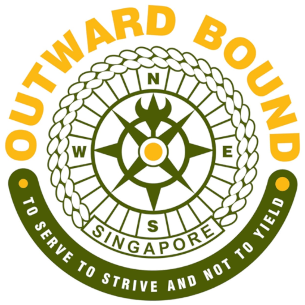

Scenario Roller
Assessor Card
Drill Focus / Scenario Filter
🎲 Any Random Scenario (Full Mix)
🦴 Positive MOI Only (Test FSA Decision Tree)
✅ FSA Clear Spine Only (Passes All 5 Steps)
⚠️ FSA Treat as Spinal Only (Fails Reliability/CSM/Palpation)
🚨 Critical Primary (ABCDE) Issue Only
🎲
Roll New Casualty Scenario